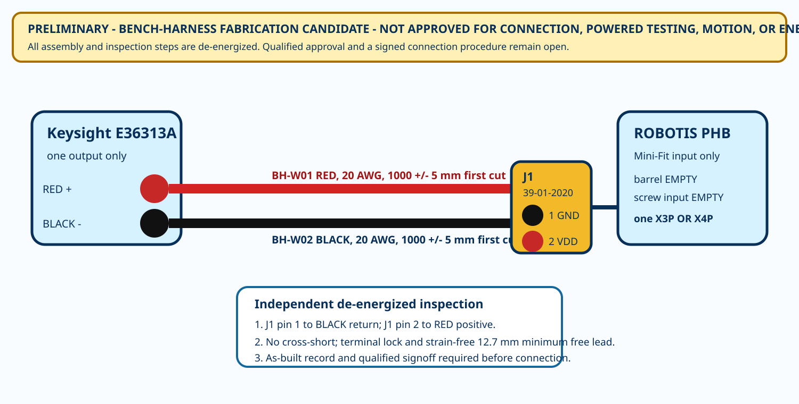

J1 is explicit
Cavity 1 is BLACK/GND. Cavity 2 is RED/VDD. The keyed housing mates only to the PHB Mini-Fit input.
PRELIMINARY - BENCH-HARNESS FABRICATION CANDIDATE - NOT APPROVED FOR CONNECTION, POWERED TESTING, MOTION, OR ENERGIZATION
The station harness is now an assembly-controlled artifact, not a line on a schematic.
The design fixes the Mini-Fit end. The Pomona source-end process, received tool calibration, destructive coupon, as-built inspection, qualified review and signed connection procedure remain open.

Cavity 1 is BLACK/GND. Cavity 2 is RED/VDD. The keyed housing mates only to the PHB Mini-Fit input.
Strip 3.00-3.30 mm. For 20 AWG, conductor crimp height is 0.83-0.93 mm and the destructive coupon must exceed 58.7 N.
The PHB barrel and screw-terminal inputs stay empty. Only one X3P or X4P actuator cable may be present.
| Step | Operation | Acceptance | Stop rule |
|---|---|---|---|
| A01 | Verify exact parts and lots | Record part, lot and photo | Stop on mismatch |
| A02 | Cut red and black separately | 1000 +/- 5 mm first cut | Stop outside length |
| A03 | Prepare Mini-Fit ends | 3.00-3.30 mm; zero damaged strands | Discard damaged end |
| A04 | Destructive process coupon | 0.83-0.93 mm and >58.7 N | Stop until passed |
| A05-A06 | Crimp and insert | black J1-1; red J1-2; both locked | Reject nonconformance |
| A07 | Terminate source ends | approved Pomona process; no exposed conductor | Stop if process unapproved |
| A08-A10 | Label, inspect, sign | continuity/polarity/short and as-built complete | No connection without authority |
complete traveler · as-built record · cut and crimp register · contact map · tooling · primary sources · open holds